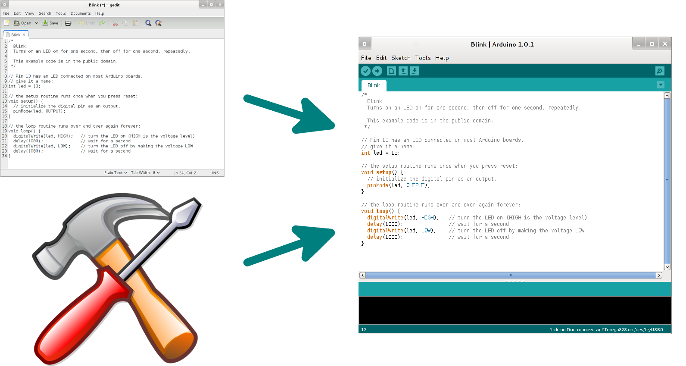
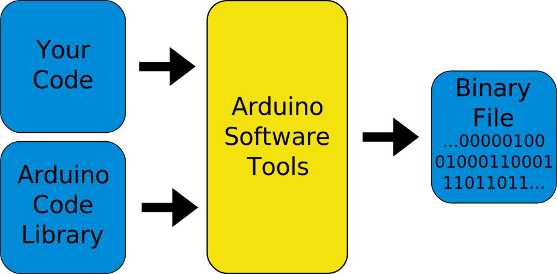
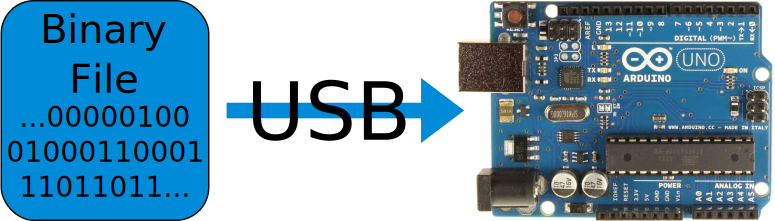
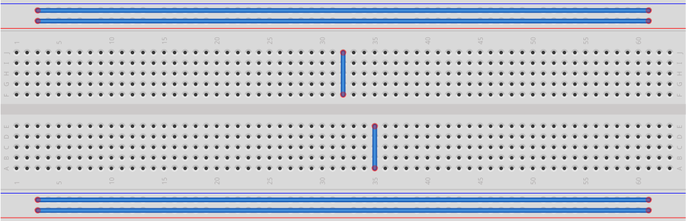

Introduction to Arduino
Programming and Electronics for your Projects
Welcome!
- Wifi: HSNOTTS-guest
- Password: hackspacebiscuits
- This Presentation: http://PRESENTATIONURL
- Presentation PDF: http://wiki.nottinghack.co.uk/wiki/Arduino101
- Arduino website: http://www.arduino.cc
What we'll be doing
- Let's get programming!
- What did we just do? What is an “Arduino” anyway?
- Serial communications (making your Arduino talk to your laptop)
- Electronics
- More blinking LEDs
- Using switches
Dive In: Blink an LED
Code-Along #1
Notes
When you first use a new programming langauge, you write a simple program to demonstrate its basic use.
On a general purpose computer, this is often a program to print "Hello, world!".
The first microcontroller program anyone writes when learning a new language or platform is one to blink an LED.
What just happened?
The Arduino IDE is a text editor combined with programming tools.
Notes
The Arduino IDE is Windows, Mac and Linux compatible.
Behind the scences, it uses standard programming tools and code.
If you want to try some desktop programming, try Processing, which is very similar to Arduino.
What just happened?
Your code is combined with the arduino library and made into a single file.
Notes
There are two main steps involved here:
- Compiling: turning each separate code file into machine code
- Linking: combining each machine code file into one
Before compiling, each file also goes through a pre-processor stage, which does replacement of strings, for example if you have:
#define LED_PIN 13
in your code, the preprocessor replaces LED_PIN with 13 everywhere it finds it.
What just happened?
That file is sent to the microcontroller down the USB cable.
It stays there until re-programmed, even if power is removed!
Notes
The program is stored in FLASH memory on the Arduino chip. This is non-volatile memory, which means it keeps its data even without power. It's normally read-only - you can only change it by reprogramming the chip.
The other main type of memory is RAM. This is where your program data lives when it's running. It's volatile memory, which means it loses all its data when it loses power.
The Arduino also has EEPROM memory which is non-voltatile read/write memory. This means you can store data even when power is removed! But it has a limited number of writes before it becomes unusable, so you have to be careful!
Serial Monitor
Code-Along #2
Notes
Serial communications are an ancient but still widely used way to communicate between computers and devices.
The Arduino has a USB chip onboard that acts like a serial port, since modern PCs and laptops don't tend to have them built in anymore.
Some smaller Arduino boards leave this chip out. In that case you need to buy a cable with this chip inside (a USB to serial cable).
Variables
Code-Along #3
Notes
When you declare a variable, you are telling the Arduino IDE:
"Give me a bit of memory and let me refer to it with this name."
For example int led = 13 means:
"Give me a bit of memory large enough to store an integer and call it led."
Variables
The data your program needs to store, for example:
- Score in a game
- Position of a joystick
- Temperature read from a sensor
- Time - like loop_timer !
Notes
Variable can have different sizes (datatypes). Here's a table:
| Name | Size (bytes) | Range |
|---|---|---|
| char | 1 | Characters e.g, 'A', 'B' or -128 to 127 |
| unsigned char | 1 | 0 to 255 |
| int | 2 | -32768 to 32767 |
| unsigned int | 2 | 0 to 65535 |
| bool | 1 | true or false |
| String | 1 per character | As long as you like! (in principle!) |
Assignment
How variables are changed.
What does loop_timer = loop_timer + 1; do?
It assigns a new value to loop_timer .
The = sign means "work out the right hand side, then put the result in the left-hand side."
Notes
Make sure you understand how and why a variable gets changed.
Can you explain why these lines of code DON'T make sense?
- loop_timer = loop_timer;
- 2 = loop_timer;
- loop_timer + 1 = loop_timer;
Electronics
Arduino is about electronics as well as programming.
We'll use a breadboard to connect our components.
Electronics
Keep your breadboards nice and neat!
Using a breadboard
Construct this circuit using an LED and a 330R resistor.
The black wire connects the short LED leg and GND.
The red wire connects the resistor leg and 5V.
References
Arduino Website: www.arduino.cc
Breadboard images made using Fritzing
This presentation made with reveal.js
Image Credits
Breadboards: Safranek-interia.eu BjornR
{kind=link}
{kind=link}